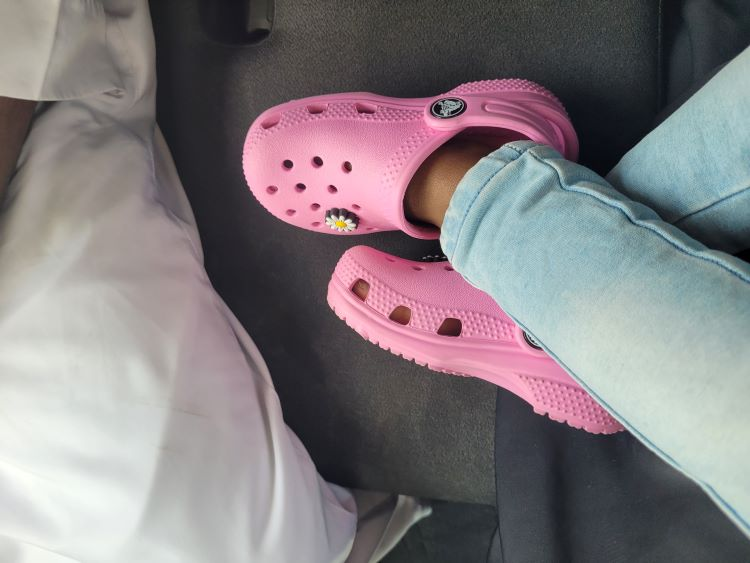
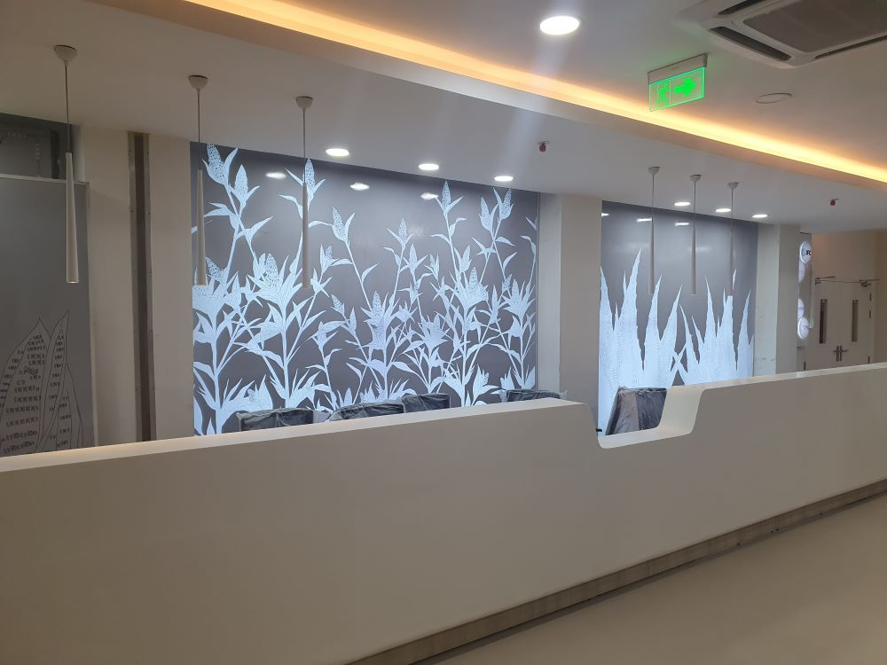
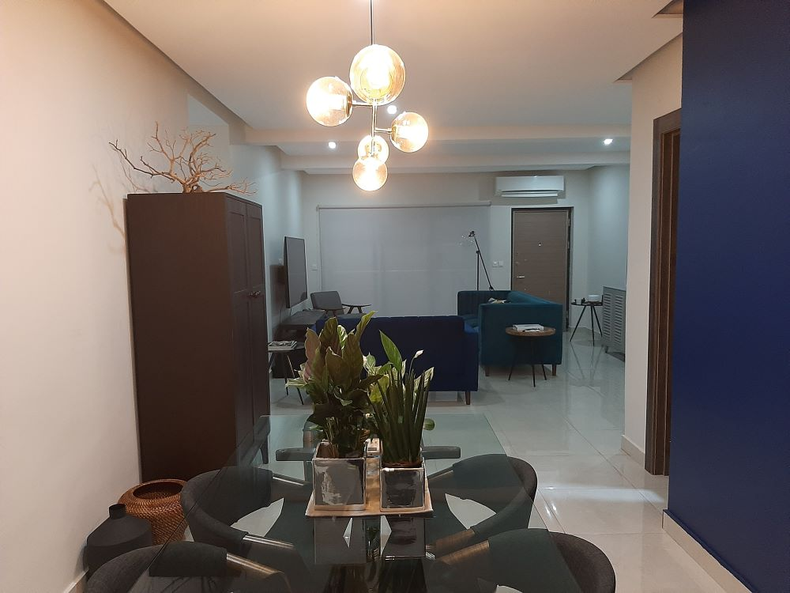
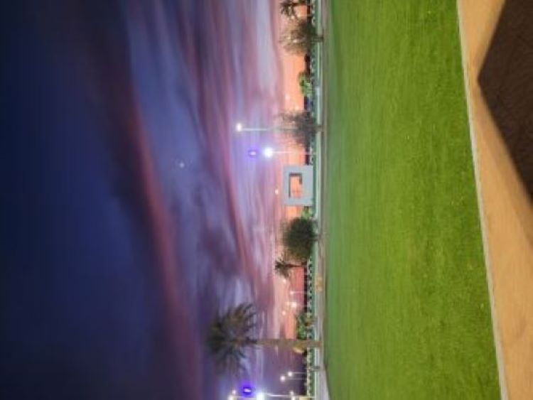
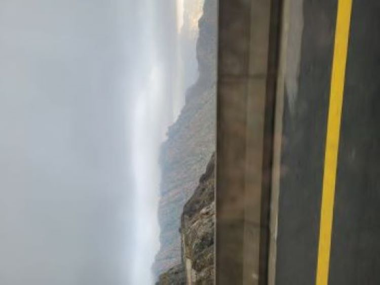
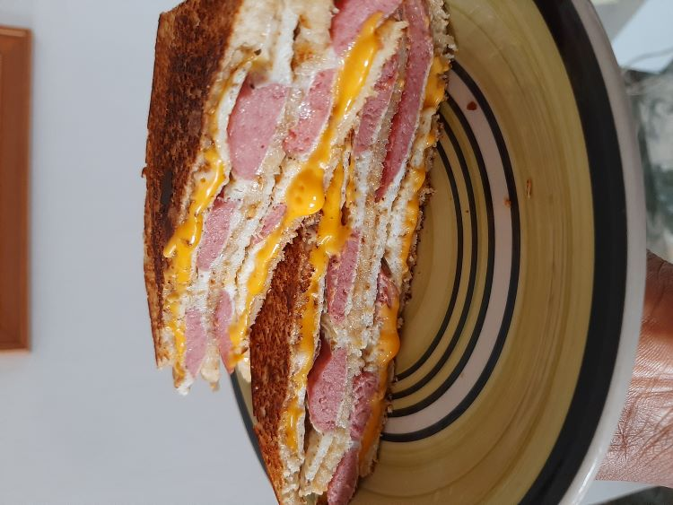
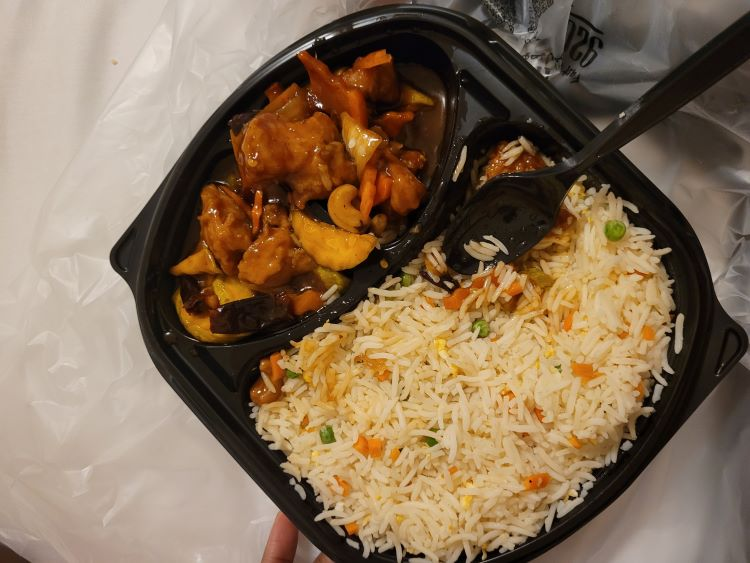
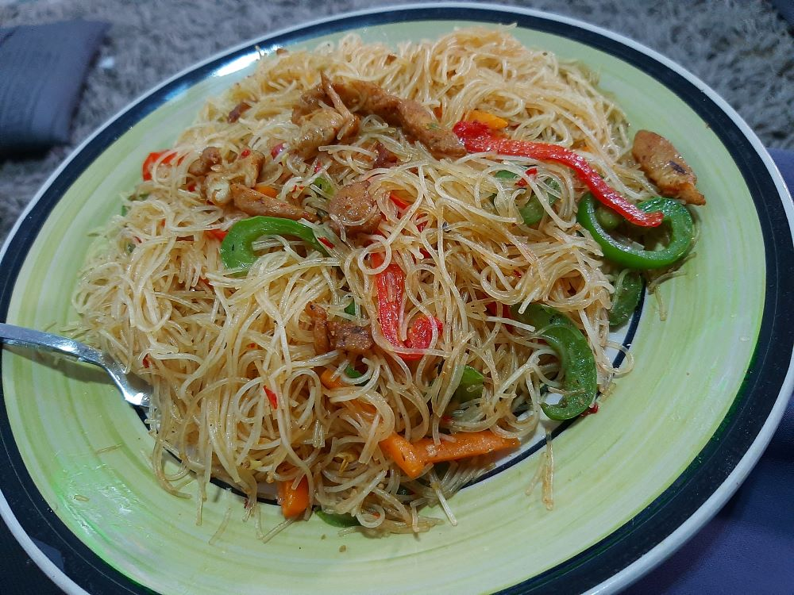

Mulikat lives with her husband and daughter in Saudi Arabia.
She enjoys going on trips with family and friends.


She has a background in Architecture: Hospital Reception Design,
Interior Design, Product Branding and Formulation.


She enjoys taking pictures of nature.



Mulikat is a foodie and enjoys eating good food either homecooked
or take out.
As a foodie you will find her watching food related content either
on youtube or instagram.
Here is one of her favorite audios from Opeyemi Famakin, A food
critic she follows on Instagram.